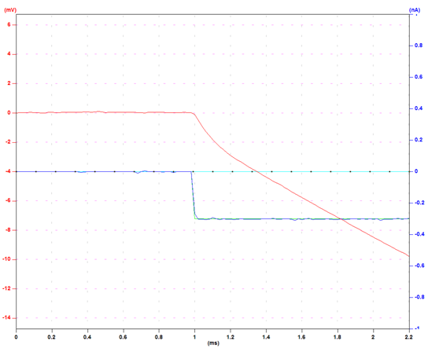
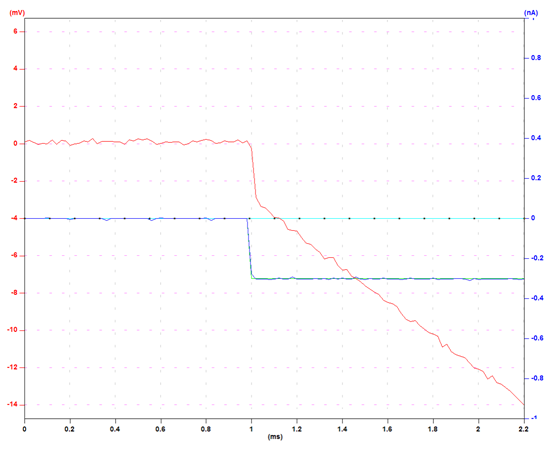
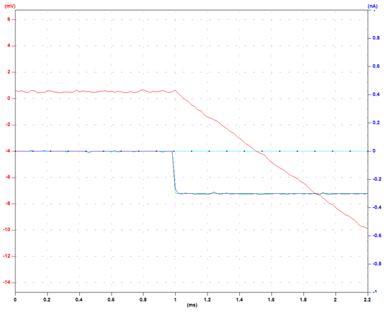
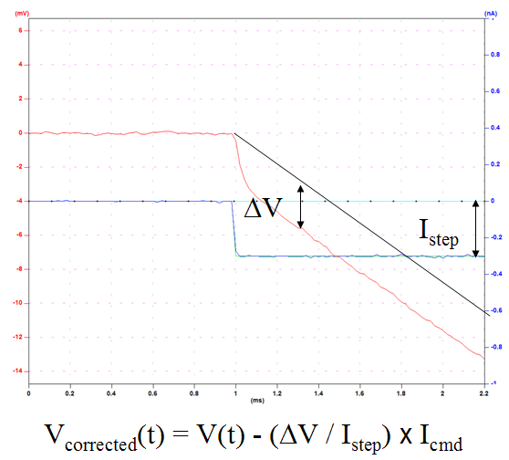
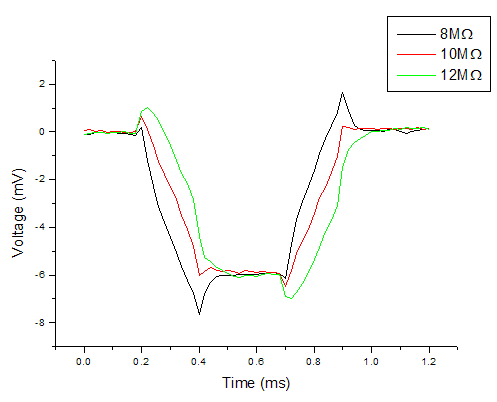
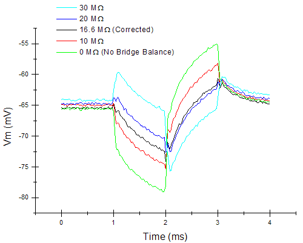
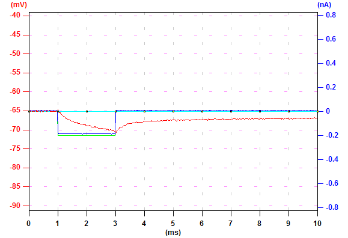
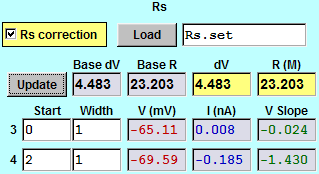

|
Let's first
follow the steps to compensate the capacitance and the Rs of a pipette in an amplifier. The figure on the right displays the voltage (red) in response to a hyperpolarizing current pulse (blue, -0.3 nA). The capacitance and the Rs of the pipette are not compensated. |
 |
| To remove the capacitance introduced by the pipette, we adjust the knob in the amplifier to make the slope of the initial voltage trace as steep as possible, but not to cause oscillation. When you start to see ripples after the edge of the falling voltage, the setting of the capacitance compensation is too much. Back off a bit so you don't see ripples. |  |
| To remove the Rs indroduced by the pipette, adjust the bridge balance knob in the amplifier so you don't see the sharp edge in the voltage trace at the beginning of current injection. At this point, the capacitance and the Rs of the pipette are well compensated. |  |
| During experiments, it is often that the Rs of the pipette changed due to various reasons (for example, clogs acculumate at the tip). Therefore, it is a common practice to monitor Rs and make appropriate adjustments so that the change in Rs does not affect the measurements. In general, this works well. However, if continuous monitoring and correction of Rs is not feasible for the experiment, an alternative is to correct it offline. By giving a test current pulse and measuring the deviation from the original corrected voltage trace, we can calculate the change in Rs. With this information, we can correct the voltage trace according to the calculated change in Rs. |  |
| The figure on the right gives an example of how improper Rs compensation affects voltage measurement. In this example, the amplifier is measureing voltage in response to one hyperpolarizing current pulse (0.2 ~ 0.4 ms) and one depolarizing current pulse (0.7 ~ 0.9 ms). The Rs of the pipette is 10 MOhm. When the bridge balance is correctly set to 10 MOhm (red), the recorded voltage reflects the real voltage of the cell. When the bridge balance is set to 8 MOhm (black), the Rs is under-compensated and the voltage is deviated from the real voltage during current injection. When the bridge balance is set to 12 MOhm (green), Rs is over-compensated and the recorded voltage is also deviated from the real voltage. Rs does not affect voltage measurement where there is no current injection. |  |
| The figure on the right is a real neuron example. The current command is composed of a hyperpolarizing current pulse (1~2 ms) and a depolarizing current pulse (2~3 ms). |  |
| Automatic Rs Compensation | |
| In an experiment, load the settings in "Rs.set". Repeat this protocol and make appropriate capacitance and Rs compensation in the amplifier. Save this data, which will be the original corrected Rs. During the experiment, repeat this protocol and save the data once a minute. |  |
| During analysis, click "Load" in the Rs tab and load "Rs.set" by following the instructions. Check "Rs correction". Go to the original corrected Rs data and click "Update". Measurement #3 measures the average voltage, current, and voltage slope from 0 to 1 ms. Measurement #4 measures these characteristics from 2 to 3 ms. The difference in average votage between measurements #3 and #4 is shown in "dV" box. The calculated resistance is in "R (M)" box. These values are saved for automatic Rs compensation. Every voltage trace after one "Rs.set" reording is corrected according to the newly loaded values until Ephic loads the next "Rs.set" recording. |  |